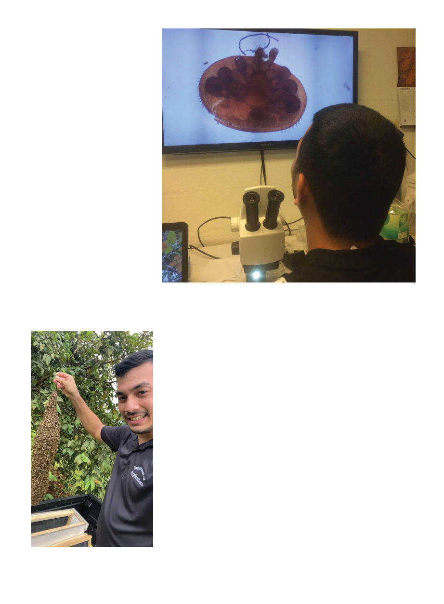

January 2025
107
Photo 4 Rosario sees a real varroa mite up close for the first time, looking at the
sample from Tinian Island back at University of Guam’s Bioquarantine Lab.
Photo 3 Christopher Rosario with a
swarm reported by a resident, April 2021
2). Up he went in a cherrypicker lift
to reach the colony, calmed the bees
with a smoker, and swept up flying
bees around the colony with an insect
net until he had about a quarter cup
of bees. The bees were then funneled
into a bottle with ethanol, to be sent to
the University of Maryland for analy-
sis.6 Job done, down he went and on
to the next site; he was just a techni-
cian after all, it was for the lab to ana-
lyze. Altogether he took samples on
Guam from 18 feral colonies and two
domestic ones.
Then he proceeded to the Northern
Mariana islands of Saipan and Tin-
ian, where they sampled four colo-
nies and three of them immediately,
obviously, were positive for varroa.
“Mites were crawling out of the bot-
tle!” Rosario says.
Back in Guam a month went by be-
fore he heard anything more about
that exposed colony beside the la-
goon. Then he got the bad news in a
call from his boss, the then State Ento-
mologist of Guam, Dr. Russell Camp-
bell. That and one other feral colony
also on the southern coast had both
tested positive for low levels (1-2 in
the sample) of mites.
“I had no idea how bad they were
until I was told that the bee colony
needed to be eradicated,” Rosario
relates. “I was a student fresh out of
college that did not know anything
about honey bees [or their pests].”
The territory’s entomologists were
all understandably shocked. This hive
would need to be put down immedi-
ately! Fortunately they had a Coconut
Rhinoceros Beetle eradication team
led by invasive species specialist Ro-
land Quitugua, with a truck-based
insecticide sprayer and 40-50 gallons
of cypermethrin. “It was so saddening
to watch,” Rosario says of watching
them hose down the colony.
Two sentinel hives were then put
near the area and monitored. Noth-
ing else was found until the follow-
ing year, when mites were detected
in one of the sentinel hives — again
from lab analysis, because a low-lev-
el mite infection is less likely to show
in an alcohol wash (in until-recently-
mite-free Australia, samples from
sentinel hives are also sent for lab
analysis,7 and that’s how mites were
first detected in June 20228). Despite
doing alcohol washes at the time of
sample taking, “I have yet to witness
a mite in a bee colony in Guam,” Ro-
sario says, as all detections have been
at such low levels they were only
caught in the lab.
Two colonies with varroa were de-
tected in 2016, and one in 2017. All
were eradicated. (“It was then that I
learned to do euthanasia with soap
and water.”) Since 2017, despite con-
stant monitoring, no mites have been
detected.
Rosario believes the mites had
probably come from the Northern
Mariana Islands, where varroa is
pervasive. Despite the import of
bee stock being illegal, it is believed
someone had smuggled bees in from
the CNMIs or Hawaii, either by boat
or air cargo.
Also Rosario, the Guam Depart-
ment of Agriculture, and the Univer-
sity of Guam have been promoting
managed beekeeping, so that lo-
cal beekeepers will spot and report
any further exotic pest incursions.
When Rosario began surveying in
2013 there were only three beekeep-
ers in Guam. As a result of his public
calls to report bees, he was hearing
from all these people who either had
bees or wanted to get into beekeep-
ing. He noticed “a harmony between
people wanting to get rid of bees on
their property, and people wanting
to keep bees on their property.”1 So
he rehomed the unwanted bees to the
people who wanted them.